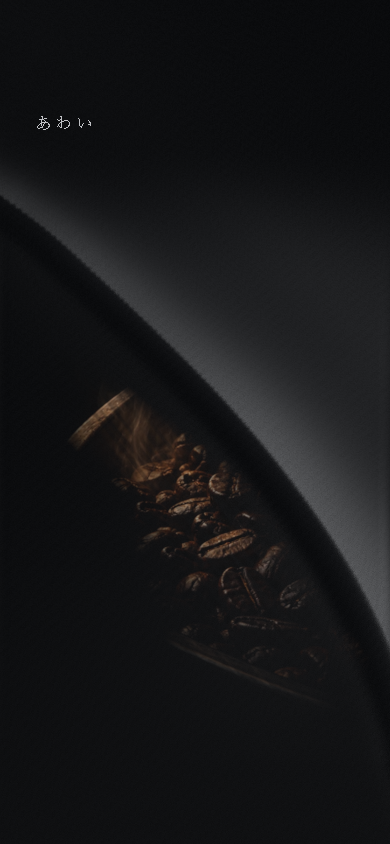
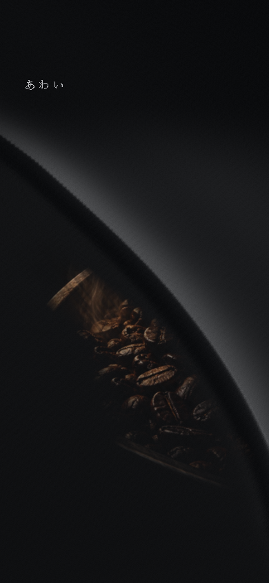

触れる発見の試作
G2-A3 Phase 2 / 体験評価待ち。S0と、同じ助任の像へ進む短い接続デモだけを実装しました。
スマホ寸法の操作録画
短いタップ → 解除と余韻 → 長押し → 復元 → 横移動 → 解除。どちらも同じ座標・荷重・入力スケジュールです。
デスクトップEdgeの390×844寸法で、CDPによるタッチ入力を収録。指の概略と操作名は録画専用の注記です。実機の指・表示遅延・FPS・発熱を測った録画ではありません。
S0 → S1の接続
接触した経路と、触らずスクロールした経路。奥の像は同じ画角に固定し、同じS1へ到達します。長押しや復元を進行条件にしていません。
PCの操作録画
接触中の像


実装方式・確認結果
読込中
自動検証の詳細
読込中
実装記録 · 検証データ · 収録条件 · 公開ファイルの記録
今回は実際の体験差の評価を待ちます。Gridの寄与が小さければ廃止を判断し、新しい物理研究は始めません。